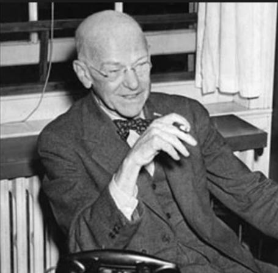

Elton Mayo
Elton Mayo (de nombre completo George Elton Mayo) (1880-1949) fue un psicólogo industrial, además de sociólogo y teórico social. Nació en Adelaida (Australia) el 26 de diciembre de 1880, y falleció en Guilford (Reino Unido), el 7 de septiembre de 1949, a la edad de 68 años.
Comenzó a estudiar en 1907 un estudio en filosofía y psicología en la universidad de Adeliade, se graduó con honores en 1910 (B.A) y también ganó el premio Roby Fletcher en psicología. Después de esto, obtuvo su maestría (MA) en 1926.
En 1919 y 1923 ocupo la primera cátedra de filosofía después de 1923 el enfoque que tuvo cambio a la investigación industrial y se convirtió en profesor en la escuela de negocios de Harvard, la primera investigación innovadora involucro a varios trabajadores de una fabrica textil, ayudo a los trabajadores con la introducción de periodos de descanso que los llevaron a obtener excelentes resultados y reconocimiento, esto fue la base de la teoría de las relaciones humanas y a su libro "Los problemas humanos de una civilización industrializada(1933)". Su investigación entre los años de 1920 y 1930 mostró el interés de los grupos para afectar el comportamiento de las personas en el trabajo, sus principios y reglas básicas se siguen usando hoy en día en numerosos libros de "como hacerlo", sobre liderazgo, administración y tutoría . Elton Mayo continuo con su investigación y conferencias como profesor de investigación industrial y se mantuvo conectado con la Escuela de Negocios de Harvard hasta 1947.
Sus investigaciones se convirtieron en la base de las teorías psicológicas sobre las relaciones humanas en la industria, elton mayo promovía la idea de las buenas relaciones laborales que motivan mas a los trabajadores que a los incentivos económicos.
Aportaciones
Estado de ánimo
Para elton mayo el estado de animo es muy importante para que los trabajadores cumplieran con sus labores de manera mas eficiente, presto mucha atención en conocer como se sentían las personas en la organización, como eran sus aptitudes ante cualquier situación, gracias a esta idea que tuvo surgió un estudio sobre la motivación del hombre en el trabajo, empezó a analizar cada una de las necesidades humanas
Efecto péndulo
mayo y sus colaboradores se basaron en las ideas de Vilfredo Pareto, con sus ideas hicieron conclusiones con efecto dramático en el pensamiento administrativo sobre las empresas, la realización de cambios en los periodos de descanso, la reducción de la jornada de trabajo y la aplicación de variantes en los sistemas de pago de incentivos.Mayo descubrió que habían otros aspectos que aumentaban la productividad de los empleados, como la moral, la relación entre los diferentes individuos del grupo de trabajo, etc. Para tener un buen funcionamiento de un grupo de trabajo, se requería de una buena administración, siendo capas de comprender el comportamiento humano y grupal.
El efecto hawthorne
Mayo descubrió lo que llamaría el efecto hawthorne esto se refiere al aumento de la productividad de los trabajadores, que se da no solo por las relaciones humanas, si no que también cuando los trabajadores estaban siendo observados, así fue como llego a establecer esta teoría.
La dimensión social de la industria
la compresión de los problemas sociales es necesaria para la comprensión de los problemas materiales, esto fue un aporte fundamental a comienzos del siglo XX, para esta teoría los incentivos económicos son importantes para motivar a los empleados, pero es mas importante la relación del trabajador con su entorno laboral.
Mayo propone que los directivos tomen consciencia de sus relaciones con los trabajadores, tener una mayor atención a las expectativas sociales al igual que una interacción mucho mas intensa, lo que implica a un aumento en la motivación y aumento de la productividad.